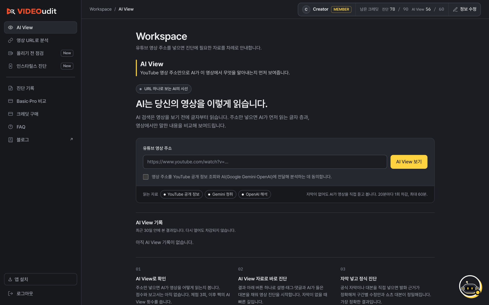
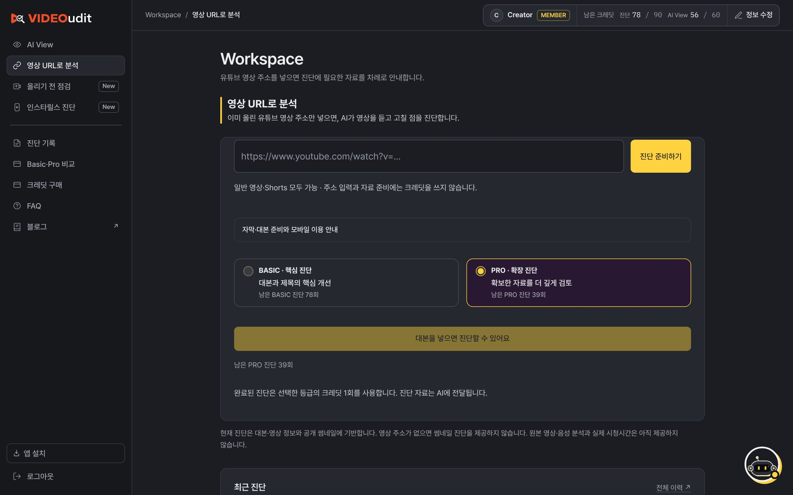
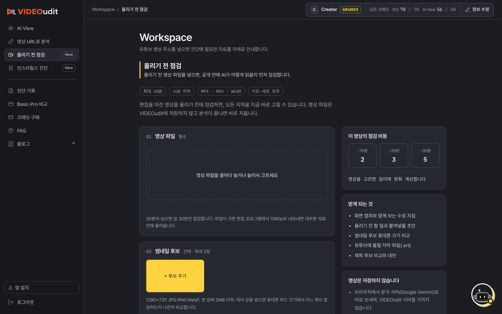
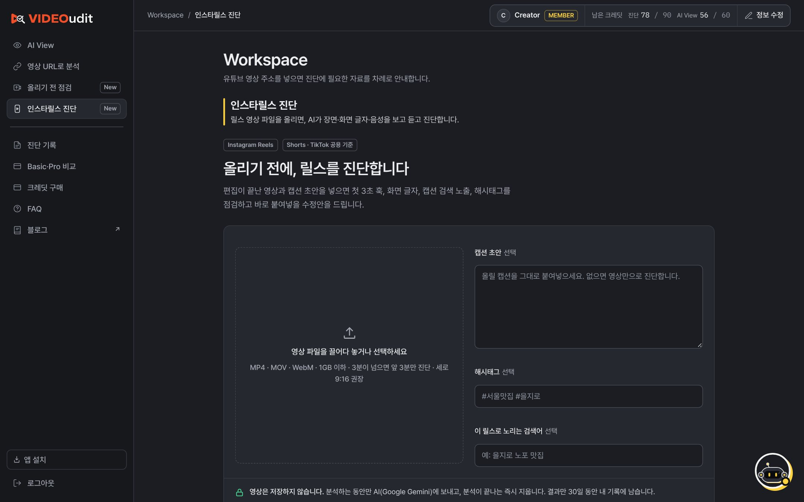
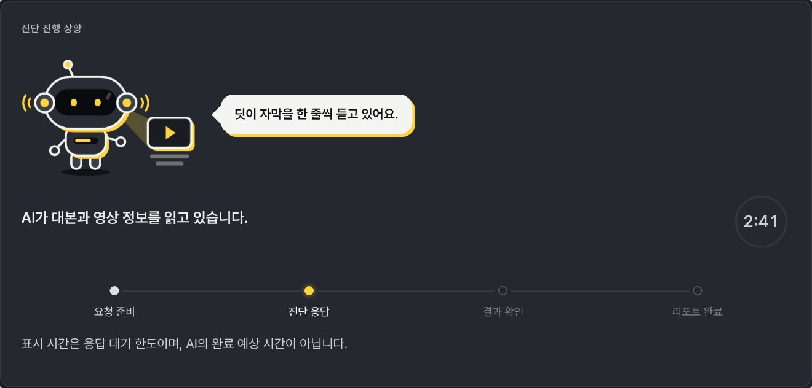
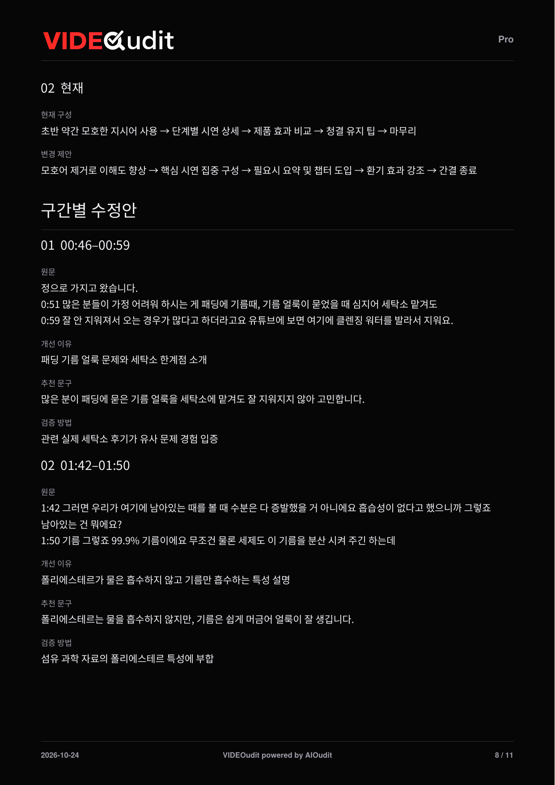
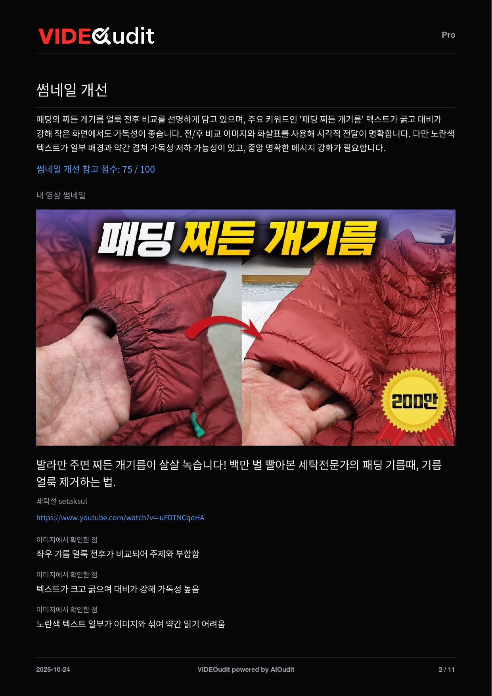
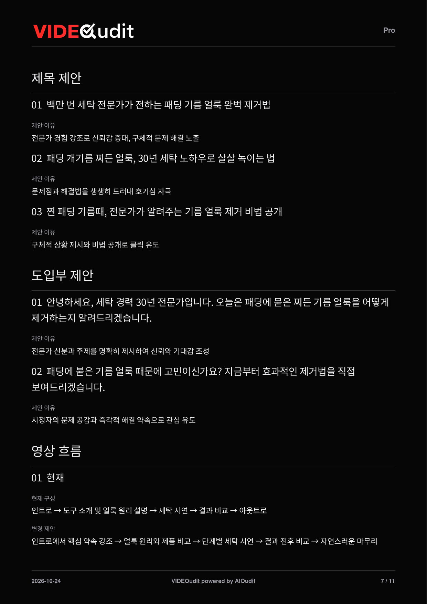
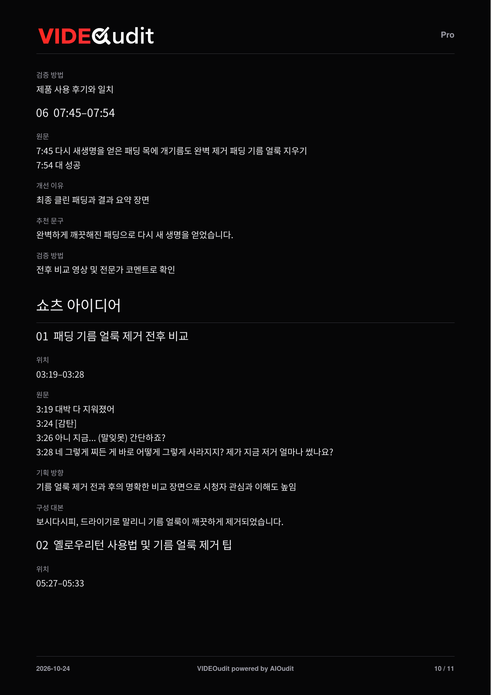

VIDEO CONTENT · FROM REVIEW TO EDIT
VIDEOudit
업로드는 매번 로또죠.
AI가 읽는 법은 미리.
주소만 넣으면 AI가 영상을 직접 듣고 받아 적어 진단합니다. 자막이 없어도, 확장 프로그램이 없어도 괜찮아요. 올리기 전 영상 파일 점검과 인스타 릴스 진단까지, 썸네일·제목·도입부와 몇 분 몇 초를 어떻게 바꿀지 다음 수정이 보이게 알려 드려요.
LOTTO로또 한 장보다 싸게, AI가 내 영상을 어떻게 읽는지 지금 바로. AI View 1회 $0.63(30회 팩 기준)부터 시작합니다.
01 / AI View
주소 하나로,
AI가 읽는 내 영상.
AI 검색은 영상을 보기 전에 글자부터 읽습니다. 영상 주소만 넣으면 AI가 먼저 읽는 글자 층과 영상에서만 말한 내용을 비교해 보여줍니다.
- 01
AI가 먼저 읽는 글자
제목, 설명 첫 줄, 챕터, 태그, 댓글처럼 AI 검색이 영상보다 먼저 읽는 것을 그대로 보여주고 YouTube 공개 수치도 함께 표시합니다.
- 02
영상에서만 말한 것
자막이 없어도 AI가 공개 영상을 직접 듣고, 글자 층에 없는 사실과 조건을 찾아냅니다. 영상 20분마다 AI View 1회를 쓰고, 한 영상은 최대 60분까지 듣습니다.
- 03
지금 고칠 것
제목, 설명 첫 줄, 챕터 초안을 복사해 바로 쓰고, 같은 자료로 영상 진단을 이어갑니다. 저장된 결과는 몇 번을 다시 열어도 차감하지 않습니다.

운영 중인 서비스 화면(2026년 11월) · 계정 표시는 예시입니다. 화면을 누르면 확대해서 볼 수 있습니다.
02 / 영상 URL로 분석
주소만 넣으면,
AI가 듣고 진단합니다.
자막 입력란이 비어 있으면 AI가 영상을 듣고 받아 적은 대본(추정 원고)으로 바로 진단해요. 공식 자막이나 대본을 넣으면 더 정밀한 보고서를 받습니다. 휴대폰 유튜브 앱의 공유 링크와 Shorts 주소도 그대로 넣으면 됩니다.
- 01
바로 진단 시작
주소를 넣고 ‘바로 진단 시작’을 누르면 영상 듣기부터 진단까지 이어집니다. 듣기는 진단 크레딧에 포함돼요(체험 10분 · Basic 15분 · Pro 30분). 더 긴 영상은 AI View로 전체를 듣도록 고를 수 있습니다.
- 02
더 정밀하게, 공식 자막으로
데스크톱 Chrome의 VIDEOudit 확장으로 공식 자막을 가져오면 추가 차감 없이 더 정확한 보고서를 받습니다. 자막 파일(.srt·.vtt·.txt)을 올리거나 대본을 붙여 넣어도 됩니다.
- 03
Basic 또는 Pro
Basic은 진단 크레딧 1개, Pro는 2개를 씁니다. Pro는 경쟁 썸네일 비교, 구간별 처방 전체, 제목·오프닝 복수 대안을 더합니다. 진단이 실패하면 크레딧은 차감되지 않습니다.

운영 중인 서비스 화면(2026년 11월) · 계정 표시는 예시입니다. 화면을 누르면 확대해서 볼 수 있습니다.
03 / NEW · 올리기 전 점검
공개 버튼 누르기 전에,
AI 눈으로 한 번 더.
편집을 마친 영상 파일을 올리면, 공개하기 전에 AI가 어떻게 읽을지 먼저 점검합니다. 모든 지적을 지금 바로 고칠 수 있는 것으로 정리해 드려요.
- 01
영상과 후보를 함께
최대 30분·1GB(MP4·MOV·WEBM) 영상에 썸네일 후보 최대 3장, 제목 후보 최대 3개, 영상에 나오는 이름까지 함께 넣습니다. 가로·세로 영상 모두 됩니다.
- 02
AI가 한 번 시청하고 정리
받아쓰기, 화면 캡처와 함께 보는 수정 지점, 휴대폰 크기로 비교한 썸네일 후보, 제목 후보 비교와 대안, 올리기 전 할 일과 붙여 넣을 설명·태그·챕터·고정 댓글 초안, 유튜브에 올릴 자막 파일(.srt)을 받습니다.
- 03
영상은 저장하지 않아요
영상은 브라우저에서 분석 서버(Google Gemini)로 바로 보내고, VIDEOudit 서버를 거치지 않으며 분석이 끝나면 지웁니다. 크레딧은 길이에 맞춰 10분 이하 2개 · 20분 이하 3개 · 30분 이하 5개입니다.

운영 중인 서비스 화면(2026년 11월) · 계정 표시는 예시입니다. 화면을 누르면 확대해서 볼 수 있습니다.
04 / NEW · 인스타릴스 진단
릴스도,
올리기 전에 진단합니다.
편집이 끝난 릴스와 캡션 초안을 넣으면 첫 3초 훅, 화면 글자, 캡션 검색 노출, 해시태그를 점검하고 바로 붙여 넣을 수정안을 드립니다. Shorts·TikTok에도 같은 기준으로 쓸 수 있어요.
- 01
편집이 끝난 릴스를 올리기
MP4·MOV·WebM 1GB 이하, 세로 9:16 권장. 3분이 넘으면 앞 3분만 진단합니다. 캡션·해시태그 초안과 노리는 검색어가 있으면 함께 넣습니다.
- 02
AI가 보고 듣기
AI가 장면·화면 글자·음성을 읽고, 영상은 분석 직후 지웁니다. 진단 근거는 이 영상에서 보이고 들린 것과 넣어 주신 캡션뿐입니다.
- 03
붙여 넣고 올리기
첫 3초 문구, 수정 캡션, 대체 텍스트, 해시태그를 복사해 바로 씁니다. 진단 크레딧 2개를 쓰고, 기록은 30일 동안 다시 열어도 차감하지 않습니다.

운영 중인 서비스 화면(2026년 11월) · 계정 표시는 예시입니다. 화면을 누르면 확대해서 볼 수 있습니다.
With DIT
기다리는 1초도,
딧이 알려 드려요.
진단 로봇 딧(DIT)이 진단하는 동안 지금 무엇을 하는지 한 줄씩 말해 줘요. 헤드셋이 빛나면 영상을 듣는 중이고, 끝나면 웃으며 리포트로 안내해요.
- 01URL 진단 중에는 4초마다 말풍선으로 지금 하는 일을 알려 줘요.
- 02화면을 내려도 오른쪽 아래 딧이 작업 이름과 경과 시간을 계속 보여 줘요. AI View·올리기 전 점검·인스타릴스 진단도 마찬가지예요.
- 03딧을 누르면 영상 진단·올리기 전 점검·진단 기록·자주 묻는 질문으로 바로 가요.

05 / 결과 확인에서 실행까지
결과를 보고,
바로 다음 컷을 준비하세요.
공개 영상을 공개 자막으로 Pro 진단한 실제 보고서입니다. 썸네일부터 대본 수정, 쇼츠 기획까지 항목별로 살펴보세요.
EDIT WITH CONTEXT
몇 분 몇 초를,
어떻게 바꿀지.
원문의 시간대를 짚고, 개선 이유와 추천 문구, 검증 방법을 함께 제공합니다.
- 타임스탬프로 위치 찾기
- 샘플의 00:46–00:59, 01:42–01:50처럼 수정할 구간을 원문 시간과 연결합니다.
- 원문과 추천 문구
- 여러 줄로 나뉜 대사의 핵심을 더 명확한 한 문장으로 정리합니다.
- 검증 방법
- 추천 문구가 사실과 맞는지 무엇으로 확인할지 함께 적습니다.
제공된 대본을 바탕으로 한 편집 제안입니다. 원본 영상·음성의 직접 평가나 실제 시청 성과 측정과는 구분됩니다.
PDF 8쪽에서 보기
실제 Pro 보고서 원본 페이지 · 확대하면 세부 내용을 읽을 수 있습니다.
THUMBNAIL CHECK
작은 화면에서도,
한눈에 읽히는지.
썸네일 이미지를 분석해 주제 전달, 글자 가독성, 개선할 점을 정리합니다. 이미지 전송에 동의한 경우에만 실행합니다.
- 이미지에서 확인한 점
- 샘플은 전후 비교와 굵은 글자는 강점으로, 배경과 겹치는 노란 글자는 개선점으로 짚었습니다.
- 관련 영상과 비교
- Pro는 같은 주제의 참고 영상 썸네일과 나란히 비교합니다.
- 개선 참고 점수
- 썸네일마다 개선 참고 점수를 함께 표시합니다.
썸네일 점수는 개선 참고치이며 실제 클릭률이나 노출을 보장하지 않습니다.
PDF 2쪽에서 보기
실제 Pro 보고서 원본 페이지 · 확대하면 세부 내용을 읽을 수 있습니다.
TITLE & OPENING
제목과 첫 문장,
여러 대안으로.
영상 내용에 맞는 제목 후보와 도입부 문장을 제안 이유와 함께 제공합니다.
- 제목 제안
- 샘플은 전문가 경험, 문제와 해결, 비법 공개처럼 방향이 다른 제목 3개를 제안합니다.
- 도입부 제안
- 첫 몇 초에 누가 무엇을 보여줄지 약속하는 문장을 제안합니다.
- 영상 흐름
- 현재 구성과 변경 제안을 나란히 보여줍니다.
제목·도입부 복수 대안은 Pro에서 제공합니다.
PDF 7쪽에서 보기
실제 Pro 보고서 원본 페이지 · 확대하면 세부 내용을 읽을 수 있습니다.
NEXT CUT
본편에서,
쇼츠로 이어질 장면.
본편 안에서 짧게 잘라 쓸 만한 구간을 위치와 함께 찾고, 기획 방향과 구성 대본을 제안합니다.
- 위치
- 샘플은 03:19–03:28 전후 비교 장면을 첫 번째 쇼츠 후보로 골랐습니다.
- 기획 방향
- 이 장면이 왜 짧은 영상에 맞는지 설명합니다.
- 구성 대본
- 촬영·편집에 바로 쓸 수 있는 짧은 대본을 함께 제공합니다.
쇼츠 아이디어는 본편 대본을 바탕으로 한 기획 제안입니다.
PDF 10쪽에서 보기
실제 Pro 보고서 원본 페이지 · 확대하면 세부 내용을 읽을 수 있습니다.
보고서 전체를 읽어보세요.
VIDEOudit Pro 샘플 · 11쪽 · PDF 2.0 MB
샘플은 2026년 10월 24일 공개 유튜브 영상(세탁설 setaksul)을 공개 자막으로 Pro 진단한 실제 보고서입니다. 결과는 진단 대상과 확보된 자료에 따라 달라집니다.
06 / 크레딧
며칠을 들인 영상,
AI가 어떻게 읽는지 $0.63.
진단 크레딧 하나로 Basic과 Pro를 모두 씁니다. 구독이 아니라 쓴 만큼만 줄고, 구매일부터 12개월 동안 유효합니다.
AI View 30 가장 가볍게
AI가 내 영상을 어떻게 읽는지부터
$19
AI View 1회 $0.63
- AI View 30회
- 진단 크레딧은 없어요
Starter
처음 한 채널
$39
Pro 진단 1건 $2.60
- 진단 크레딧 30개
- Pro 15회 또는 Basic 30회
- AI View 20회
Creator 추천
꾸준히 올리는 채널
$89
Pro 진단 1건 $1.98 · Starter보다 24% 저렴
- 진단 크레딧 90개
- Pro 45회 또는 Basic 90회
- AI View 60회
Studio
여러 채널·팀
$179
Pro 진단 1건 $1.70 · Starter보다 34% 저렴
- 진단 크레딧 210개
- Pro 105회 또는 Basic 210회
- AI View 150회
- Basic 1개 · Pro 2개영상 길이와 관계없이 Basic은 1개, Pro와 인스타릴스 진단은 2개. 올리기 전 점검은 길이에 따라 2·3·5개.
- AI View는 20분마다 1회한 영상에 최대 3회, 60분이 넘으면 앞 60분만 듣습니다.
- 실패하면 차감 없음진단이 실패하면 예약한 크레딧을 되돌립니다. 다시 열기와 PDF 재다운로드도 차감하지 않습니다.
- 가입하면 체험부터이메일 또는 Google로 가입하고 이메일 인증을 마치면 진단 크레딧과 AI View 체험을 드립니다.
로또 1등은 814만 분의 1. 이건 결과가 100% 나와요.
붕어빵 한 마리 값으로, 며칠 들인 영상을 AI가 읽어봅니다.
결제는 Polar(판매 대행)의 보안 결제 페이지에서 미국 달러로 진행되며 자동 갱신은 없습니다. 원화 금액은 결제일 환율과 카드사에 따라 달라집니다. 가격과 이용 조건은 서비스의 크레딧 안내가 기준입니다.
Your next step